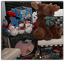

Every year SDAR members fill a home, known as Holiday House, with new toys, gifts, household items, non-perishable food items, and other goods to be donated to local charities. Our annual charity drive benefits the Ambassadors Foundation, a 501(c)(3) non-profit committed to supporting local San Diego charities.
Donations and financial contributions are accepted until December 3.
Help create a happy holiday season for San Diego's wounded veterans, military families, senior citizens, women and children breaking the cycle of domestic violence. Mark your calendars for the Holiday House Celebration on Friday, December 6, 2014.